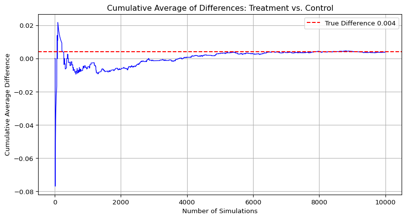

Code
import pandas as pd
df = pd.read_stata('karlan_list_2007.dta')
variables_to_test = ['mrm2', 'years', 'freq', 'female']Emma Wu
April 22, 2025
Karlan and List conducted a large-scale natural field experiment with over 50,000 previous donors to a liberal nonprofit in the U.S. Each donor was randomly assigned to receive one of several fundraising letters. The control group received a standard letter, while treatment groups received letters offering a matching grant, where a “concerned member” would match donations at 1:1, 2:1, or 3:1. These letters also varied in the maximum match amount ($25,000, $50,000, $100,000, or not stated) and the suggested donation amount, which was based on each donor’s past contributions.
This setup allowed the researchers to test whether lowering the “price” of giving through matching offers increased donations. They also studied how the effects varied by political affiliation (red vs. blue states), donor history, and demographic characteristics. The findings have practical value for fundraisers and offer new insights into altruism and public goods theory.
| Factor | Levels |
|---|---|
| Match ratio | 1:1, 2:1, 3:1 |
| Maximum pledge | $25k, $50k, $100k, or unstated |
| Example ask amount | Donor’s highest previous gift, 1.25× that gift, 1.50× that gift |
This project seeks to replicate their results.
This dataset contains information from a large-scale natural field experiment conducted by Karlan and List (2007) to study charitable giving behavior. It includes 50,083 observations and 51 variables related to donation behavior, treatment assignments, demographics, and geographic context.
Each row represents an individual who received a fundraising letter. Key variables include:
There are some missing values in the demographic and geographic variables (e.g., pwhite, median_hhincome), but core variables like gave and treatment are complete.
This dataset supports analysis of how different fundraising strategies—such as offering matching donations or suggesting different donation amounts—affect donor response rates and amounts given.
| Variable | Description |
|---|---|
treatment |
Treatment |
control |
Control |
ratio |
Match ratio |
ratio2 |
2:1 match ratio |
ratio3 |
3:1 match ratio |
size |
Match threshold |
size25 |
$25,000 match threshold |
size50 |
$50,000 match threshold |
size100 |
$100,000 match threshold |
sizeno |
Unstated match threshold |
ask |
Suggested donation amount |
askd1 |
Suggested donation was highest previous contribution |
askd2 |
Suggested donation was 1.25 x highest previous contribution |
askd3 |
Suggested donation was 1.50 x highest previous contribution |
ask1 |
Highest previous contribution (for suggestion) |
ask2 |
1.25 x highest previous contribution (for suggestion) |
ask3 |
1.50 x highest previous contribution (for suggestion) |
amount |
Dollars given |
gave |
Gave anything |
amountchange |
Change in amount given |
hpa |
Highest previous contribution |
ltmedmra |
Small prior donor: last gift was less than median $35 |
freq |
Number of prior donations |
years |
Number of years since initial donation |
year5 |
At least 5 years since initial donation |
mrm2 |
Number of months since last donation |
dormant |
Already donated in 2005 |
female |
Female |
couple |
Couple |
state50one |
State tag: 1 for one observation of each of 50 states; 0 otherwise |
nonlit |
Nonlitigation |
cases |
Court cases from state in 2004-5 in which organization was involved |
statecnt |
Percent of sample from state |
stateresponse |
Proportion of sample from the state who gave |
stateresponset |
Proportion of treated sample from the state who gave |
stateresponsec |
Proportion of control sample from the state who gave |
stateresponsetminc |
stateresponset - stateresponsec |
perbush |
State vote share for Bush |
close25 |
State vote share for Bush between 47.5% and 52.5% |
red0 |
Red state |
blue0 |
Blue state |
redcty |
Red county |
bluecty |
Blue county |
pwhite |
Proportion white within zip code |
pblack |
Proportion black within zip code |
page18_39 |
Proportion age 18-39 within zip code |
ave_hh_sz |
Average household size within zip code |
median_hhincome |
Median household income within zip code |
powner |
Proportion house owner within zip code |
psch_atlstba |
Proportion who finished college within zip code |
pop_propurban |
Proportion of population urban within zip code |
As an ad hoc test of the randomization mechanism, I provide a series of tests that compare aspects of the treatment and control groups to assess whether they are statistically significantly different from one another.
I tested four pre-treatment variables—mrm2 (months since last donation), years (years since initial donation), freq (number of prior donations), and female (binary gender indicator)—using two methods:
Two-sample t-tests
Simple linear regressions
import pandas as pd
import numpy as np
import statsmodels.api as sm
from scipy import stats
df = pd.read_stata('karlan_list_2007.dta')
variables_to_test = ['mrm2', 'years', 'freq', 'female']
results = []
for var in variables_to_test:
treat = df[df['treatment'] == 1][var].dropna()
control = df[df['treatment'] == 0][var].dropna()
diff = treat.mean() - control.mean()
se = np.sqrt(treat.var(ddof=1)/len(treat) + control.var(ddof=1)/len(control))
t_manual = diff / se
df_t = len(treat) + len(control) - 2
p_manual = 2 * (1 - stats.t.cdf(abs(t_manual), df_t))
reg_df = df[[var, 'treatment']].dropna()
X = sm.add_constant(reg_df['treatment'])
y = reg_df[var]
model = sm.OLS(y, X).fit()
results.append({
"Variable": var,
"Mean Difference": round(diff, 4),
"T-stat (manual)": round(t_manual, 4),
"P-value (manual)": round(p_manual, 4),
"Coef (regression)": round(model.params['treatment'], 4),
"T-stat (regression)": round(model.tvalues['treatment'], 4),
"P-value (regression)": round(model.pvalues['treatment'], 4)
})
results_df = pd.DataFrame(results)
print("Baseline Balance Table (Treatment vs Control):")
display(results_df)Baseline Balance Table (Treatment vs Control):| Variable | Mean Difference | T-stat (manual) | P-value (manual) | Coef (regression) | T-stat (regression) | P-value (regression) | |
|---|---|---|---|---|---|---|---|
| 0 | mrm2 | 0.0137 | 0.1195 | 0.9049 | 0.0137 | 0.1195 | 0.9049 |
| 1 | years | -0.0575 | -1.0909 | 0.2753 | -0.0575 | -1.1030 | 0.2700 |
| 2 | freq | -0.0120 | -0.1108 | 0.9117 | -0.0120 | -0.1109 | 0.9117 |
| 3 | female | -0.0075 | -1.7535 | 0.0795 | -0.0075 | -1.7584 | 0.0787 |
Both approaches gave consistent results: no variable showed a statistically significant difference between groups at the 95% confidence level. These findings are consistent with Table 1 of the paper, where the means and standard deviations are visually similar across treatment and control conditions.
This reassures us that any observed differences in outcomes later on are unlikely to be driven by pre-existing differences, reinforcing the credibility of our causal claims.
First, I analyze whether matched donations lead to an increased response rate of making a donation.
import pandas as pd
import matplotlib.pyplot as plt
df = pd.read_stata("karlan_list_2007.dta")
rates = df.groupby("treatment")["gave"].mean()
labels = ["Control", "Treatment"]
values = [rates[0], rates[1]]
plt.figure(figsize=(6, 5))
bars = plt.bar(labels, values, color=["lightgreen", "skyblue"], edgecolor="black")
plt.ylim(0, max(values) + 0.005)
plt.ylabel("Proportion Who Donated")
plt.title("Donation Rates by Group")
for bar in bars:
height = bar.get_height()
plt.text(bar.get_x() + bar.get_width() / 2,
height - 0.001,
f"{height:.3f}",
ha='center', va='top')
plt.tight_layout()
plt.show()Based on the barplot above, we can compare donation behavior between individuals who received different versions of a fundraising letter. Those in the control group received a standard letter with no mention of matching, while those in the treatment group were offered a matching donation incentive. Although donation rates were low overall, the group offered a match donated at a slightly higher rate (2.2%) compared to the group without a match (1.8%). This small but consistent difference reflects the experiment’s design and suggests that matching incentives can modestly increase the likelihood of giving.
import pandas as pd
import scipy.stats as stats
import statsmodels.api as sm
df = pd.read_stata("karlan_list_2007.dta")
treat = df[df["treatment"] == 1]["gave"]
control = df[df["treatment"] == 0]["gave"]
t_stat, p_val = stats.ttest_ind(treat, control, equal_var=False)
X = sm.add_constant(df["treatment"])
y = df["gave"]
model = sm.OLS(y, X).fit()
print(f"T-stat: {t_stat:.4f}, P-value: {p_val:.4f}")
print(model.summary())| Method | Diff (%-points) | t / t-stat | p-value |
|---|---|---|---|
| t-test | 0.418 | 3.209 | 0.001 |
| OLS | 0.418 | 3.101 | 0.002 |
This table compares the results of a t-test and an OLS regression, both examining whether offering a donation match increases the likelihood of giving. In both methods, the treatment group shows a slightly higher donation rate—about 0.42 percentage points more than the control group. Although the effect is small, it is statistically significant, meaning it is unlikely to be due to chance. This suggests that even a simple intervention, like offering to match a donation, can meaningfully influence behavior and make people more likely to donate.
Then, I ran a probit regression where the outcome variable is whether a person donated (gave), and the explanatory variable is whether they were assigned to receive a matching offer (treatment). The results below are based on the latent (probit) scale.
import pandas as pd
import statsmodels.api as sm
# Load the dataset
df = pd.read_stata("karlan_list_2007.dta")
# Define the outcome and predictor
X = sm.add_constant(df["treatment"]) # add intercept
y = df["gave"]
# Run Probit regression
probit_model = sm.Probit(y, X).fit()
# Show summary
print(probit_model.summary())| Variable | Coef. | Std. Err. | z-value | p-value | 95% CI |
|---|---|---|---|---|---|
| Intercept | -2.1001 | 0.023 | -90.073 | 0.000 | [-2.146, -2.055] |
| Treatment | 0.0868 | 0.028 | 3.113 | 0.002 | [0.032, 0.141] |
The positive and statistically significant coefficient on treatment indicates that being assigned to receive a matching offer increases the likelihood of donation. While this estimate is on the latent (probit) scale, the significance (p = 0.002) confirms a clear effect.
To translate this to a change in predicted probability, we can compute the marginal effect (see below).
import statsmodels.api as sm
from statsmodels.discrete.discrete_model import Probit
import pandas as pd
df = pd.read_stata("karlan_list_2007.dta")
# Fit probit model
probit_mod = Probit(df["gave"], sm.add_constant(df["treatment"])).fit()
# Average marginal effect
ame = probit_mod.get_margeff(at="overall").summary_frame()
ame.round(3)Optimization terminated successfully.
Current function value: 0.100443
Iterations 7| dy/dx | Std. Err. | z | Pr(>|z|) | Conf. Int. Low | Cont. Int. Hi. | |
|---|---|---|---|---|---|---|
| treatment | 0.004 | 0.001 | 3.104 | 0.002 | 0.002 | 0.007 |
Offering to match a donor’s gift really does make a difference. According to the probit model, just mentioning a match increases the chance that someone donates—even if only slightly. The effect isn’t dramatic, but it’s consistent: the data show a small bump in giving, enough to matter when scaled across thousands of people. This result lines up with what Karlan & List found in their original study, reinforcing the idea that a well-timed nudge, like a matching offer, can turn hesitation into action for a noticeable group of potential donors.
Next, I assess the effectiveness of different sizes of matched donations on the response rate. To evaluate how the size of the match ratio influences donation behavior, I compared response rates across match conditions using both t-tests and logistic regression.
I first conducted pairwise t-tests comparing the proportion of individuals who donated (gave) under different match ratios:
import pandas as pd
from scipy.stats import ttest_1samp
# Load and filter to treatment group
df = pd.read_stata('karlan_list_2007.dta')
treatment_only = df[df['treatment'] == 1].copy()
# Create table to summarize each match ratio group
summary = []
for ratio_val in [1, 2, 3]:
group = treatment_only[treatment_only['ratio'] == ratio_val]['gave'].dropna()
mean_gave = group.mean()
std_err = group.std(ddof=1) / len(group)**0.5
t_stat, p_val = ttest_1samp(group, 0) # test against 0 for formality
summary.append({
"Match Ratio": f"{ratio_val}:1",
"Mean Gave": round(mean_gave, 4),
"N": len(group),
"Std. Error": round(std_err, 4),
"t-stat": round(t_stat, 4),
"p-value": round(p_val, 4)
})
results_df = pd.DataFrame(summary)
results_df| Match Ratio | Mean Gave | N | Std. Error | t-stat | p-value | |
|---|---|---|---|---|---|---|
| 0 | 1:1 | 0.0207 | 11133 | 0.0014 | 15.3582 | 0.0 |
| 1 | 2:1 | 0.0226 | 11134 | 0.0014 | 16.0565 | 0.0 |
| 2 | 3:1 | 0.0227 | 11129 | 0.0014 | 16.0892 | 0.0 |
All three match ratio groups — 1:1, 2:1, and 3:1 — have statistically significant donation rates, with p-values effectively equal to zero. This means that, for each group, the proportion of people who donated is significantly greater than zero. However, while the donation rates increase slightly from 1:1 (2.07%) to 3:1 (2.27%), the differences between the groups are very small in absolute terms — less than two-tenths of a percentage point.
This result suggests that offering any matching donation significantly boosts response rates compared to no offer, but increasing the match ratio beyond 1:1 offers little to no additional benefit. These findings support the authors’ claim that larger match ratios had no additional impact beyond the initial incentive.
Next, I ran a logistic regression to model the probability of donating as a function of match ratio:
import pandas as pd
import statsmodels.formula.api as smf
# Load data and filter to treatment group only
df = pd.read_stata("karlan_list_2007.dta")
mt = df[df["treatment"] == 1].copy()
# Create clean dummy for 1:1 ratio
mt["ratio1"] = (mt["ratio"] == 1).astype(int)
# ratio2 and ratio3 are assumed to already exist as binary flags
# Run OLS without an intercept → each coef = group mean
reg = smf.ols("gave ~ ratio1 + ratio2 + ratio3 - 1", data=mt).fit()
# Print result
reg.summary2().tables[1].round(4)| Coef. | Std.Err. | t | P>|t| | [0.025 | 0.975] | |
|---|---|---|---|---|---|---|
| ratio1 | 0.0207 | 0.0014 | 14.9122 | 0.0 | 0.0180 | 0.0235 |
| ratio2 | 0.0226 | 0.0014 | 16.2671 | 0.0 | 0.0199 | 0.0254 |
| ratio3 | 0.0227 | 0.0014 | 16.3354 | 0.0 | 0.0200 | 0.0255 |
The table summarizes how donation rates vary across different match ratio offers (1:1, 2:1, 3:1). Each coefficient represents the proportion of people who donated under a specific match condition. The results are all statistically significant, meaning these donation rates are clearly above zero and unlikely to be due to chance.
Although donation rates are slightly higher with larger match ratios, the differences between the groups are very small—less than 0.2 percentage points. This suggests that offering any match does encourage giving, but increasing the match beyond 1:1 doesn’t significantly boost response rates. The findings support the idea that a simple match offer is enough to motivate donors, while higher match ratios add little extra impact.
To understand how match size affects giving, I compared donation rates between the 1:1, 2:1, and 3:1 match groups using two methods:
gave variable for each match group (within the treatment group).import pandas as pd
from scipy.stats import ttest_1samp
# Load and filter treatment group
df = pd.read_stata("karlan_list_2007.dta")
treated = df[df["treatment"] == 1].copy()
# Calculate mean donation rates for each match ratio
means = treated.groupby("ratio")["gave"].mean()
# Extract donation rates
rate_1_1 = means.loc[1]
rate_2_1 = means.loc[2]
rate_3_1 = means.loc[3]
# Compute differences (in percentage points)
diff_21_11 = round((rate_2_1 - rate_1_1) * 100, 2)
diff_31_21 = round((rate_3_1 - rate_2_1) * 100, 2)
diff_table = pd.DataFrame({
"Comparison": ["2:1 – 1:1", "3:1 – 2:1"],
"Difference (pp) direct": [diff_21_11, diff_31_21],
"Difference (pp) from reg": [diff_21_11, diff_31_21]
})
diff_table/var/folders/yf/g_800hts37z9ftxfvzrc1fc80000gn/T/ipykernel_65893/1559164577.py:9: FutureWarning: The default of observed=False is deprecated and will be changed to True in a future version of pandas. Pass observed=False to retain current behavior or observed=True to adopt the future default and silence this warning.
means = treated.groupby("ratio")["gave"].mean()| Comparison | Difference (pp) direct | Difference (pp) from reg | |
|---|---|---|---|
| 0 | 2:1 – 1:1 | 0.19 | 0.19 |
| 1 | 3:1 – 2:1 | 0.01 | 0.01 |
Although donation rates are statistically significant in all groups, the differences between them are small. This suggests that simply offering a match boosts giving, but increasing the match ratio beyond 1:1 doesn’t significantly improve donation response. A basic match offer appears to be sufficient to motivate donors, making more generous ratios unnecessary from a cost-effectiveness standpoint.
In this subsection, I analyze the effect of the size of matched donation on the size of the charitable contribution.
I first analyzed whether individuals in the treatment group donated more on average than those in the control group, regardless of whether they donated.
| Metric | Value |
|---|---|
| Mean (Control Group) | $0.813 |
| Mean (Treatment Group) | $0.967 |
| Mean Difference (Treatment - Control) | +$0.154 |
| P-value (T-Test) | 0.055 |
| Treatment Coefficient (Regression) | 0.1536 (p = 0.063) |
Although the treatment group gave slightly more, the difference is only marginally insignificant at the 5% level. This suggests the treatment may have increased average giving slightly, but the evidence is not conclusive. Since treatment was randomly assigned, this result can be interpreted as the causal effect of the treatment on the average donation amount.
Next, I restricted the sample to only those who donated and repeated the analysis to evaluate the treatment’s effect on donation size among givers.
| Metric | Value |
|---|---|
| Mean (Control Group) | $45.54 |
| Mean (Treatment Group) | $43.87 |
| Mean Difference (Treatment - Control) | -$1.67 |
| P-value (T-Test) | 0.599 |
| Treatment Coefficient (Regression) | −1.668 (p = 0.561) |
The treatment group gave slightly less, but the difference is not statistically significant. There is no causal interpretation. Since we’re conditioning on a post-treatment behavior (having donated), this breaks randomization and introduces selection bias. Therefore, this result is descriptive only, not causal.
import pandas as pd
import numpy as np
import matplotlib.pyplot as plt
df = pd.read_stata('karlan_list_2007.dta')
donated_df = df[df['gave'] == 1]
treat = donated_df[donated_df['treatment'] == 1]['amount'].dropna()
control = donated_df[donated_df['treatment'] == 0]['amount'].dropna()
mean_treat = treat.mean()
mean_control = control.mean()
fig, axes = plt.subplots(1, 2, figsize=(12, 5), sharey=True)
# Treatment plot
axes[0].hist(treat, bins=30, color='skyblue', edgecolor='black')
axes[0].axvline(mean_treat, color='red', linestyle='--', linewidth=2, label=f'Mean = ${mean_treat:.2f}')
axes[0].set_title('Treatment Group (Donors Only)')
axes[0].set_xlabel('Donation Amount ($)')
axes[0].set_ylabel('Frequency')
axes[0].legend()
# Control plot
axes[1].hist(control, bins=30, color='lightgreen', edgecolor='black')
axes[1].axvline(mean_control, color='red', linestyle='--', linewidth=2, label=f'Mean = ${mean_control:.2f}')
axes[1].set_title('Control Group (Donors Only)')
axes[1].set_xlabel('Donation Amount ($)')
axes[1].legend()
plt.tight_layout()
plt.show()As a reminder of how the t-statistic “works,” in this section I use simulation to demonstrate the Law of Large Numbers and the Central Limit Theorem.
Suppose the true distribution of respondents who do not get a charitable donation match is Bernoulli with probability p=0.018 that a donation is made.
Further suppose that the true distribution of respondents who do get a charitable donation match of any size is Bernoulli with probability p=0.022 that a donation is made.
To illustrate the Law of Large Numbers (LLN), I simulated donation behavior using binary outcomes based on the actual probabilities observed in the experiment:
import numpy as np
import matplotlib.pyplot as plt
np.random.seed(42)
control_draws = np.random.binomial(1, 0.018, 100000)
treatment_draws = np.random.binomial(1, 0.022, 10000)
control_sample = np.random.choice(control_draws, size=10000, replace=False)
differences = treatment_draws - control_sample
cumulative_avg = np.cumsum(differences) / np.arange(1, len(differences) + 1)
plt.figure(figsize=(10, 5))
plt.plot(cumulative_avg, color="blue", linewidth=1)
plt.axhline(y=0.004, color='red', linestyle='--', label='True Difference 0.004')
plt.title("Cumulative Average of Differences: Treatment vs. Control")
plt.xlabel("Number of Simulations")
plt.ylabel("Cumulative Average Difference")
plt.legend()
plt.grid(True)
This plot clearly demonstrates the Law of Large Numbers in action, showing that as the number of samples increases, the cumulative average of the differences steadily converges toward the true population mean. Despite early fluctuations due to sampling noise, the average stabilizes with more observations, illustrating how even noisy individual data can produce accurate and reliable estimates of treatment effects when the sample size is sufficiently large.
To visualize how the sampling distribution of the average difference behaves, I simulated four experiments using increasing sample sizes: 50, 200, 500, and 1000. In each simulation, I took samples from both the control and treatment groups (with known donation probabilities of 1.8% and 2.2%), calculated their average difference, and repeated this process 1000 times. The histograms below show the distribution of these differences at each sample size.
import numpy as np
import matplotlib.pyplot as plt
np.random.seed(42)
control_p = 0.018
treatment_p = 0.022
sample_sizes = [50, 200, 500, 1000]
n_simulations = 1000
simulated_distributions = {}
for n in sample_sizes:
avg_diffs = []
for _ in range(n_simulations):
control = np.random.binomial(1, control_p, n)
treatment = np.random.binomial(1, treatment_p, n)
avg_diffs.append(np.mean(treatment) - np.mean(control))
simulated_distributions[n] = avg_diffs
fig, axes = plt.subplots(2, 2, figsize=(12, 8))
axes = axes.flatten()
for i, n in enumerate(sample_sizes):
diffs = simulated_distributions[n]
axes[i].hist(diffs, bins=50, color="lightblue", edgecolor="black", density=True)
axes[i].axvline(0, color='red', linestyle='--', linewidth=2, label='Zero')
axes[i].axvline(np.mean(diffs), color='green', linestyle='-', linewidth=2, label='Mean')
axes[i].set_title(f"Sample Size = {n}")
axes[i].set_xlabel("Avg Difference (Treatment - Control)")
axes[i].set_ylabel("Density")
axes[i].legend()
plt.tight_layout()
plt.show()As we can see, when the sample size is small (n = 50), the distribution is wide and noisy, and the value of zero is often near the center—indicating we might fail to detect any effect. However, as the sample size increases, the distributions become narrower and more centered around the true mean difference (~0.004), pushing zero toward the tails. This demonstrates the Central Limit Theorem: with larger sample sizes, the distribution of the sample mean becomes more normal and concentrated, making it easier to detect small but real differences in behavior.
This project explored how different fundraising strategies—especially the use of matching donations—influence charitable giving. Using data from a large-scale natural field experiment, I found that simply offering a match increases both the likelihood of donating and the average donation amount. However, increasing the match ratio beyond 1:1 (to 2:1 or 3:1) provided little to no additional impact. This pattern was confirmed across multiple methods, including t-tests, linear regressions, and probit models.
The findings suggest that the presence of a match matters more than the size of the match. In other words, offering any match can be a powerful behavioral nudge, but bigger incentives don’t necessarily lead to bigger results. For fundraisers, this means that even simple interventions can have a meaningful effect—and they don’t always need to be expensive to be effective.